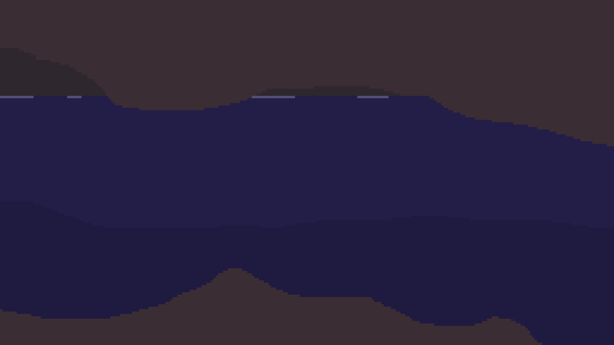

Procedural generation is two big words for one simple thing: the creation of data by computers. Procedural generation is usually used to create content for video games or animated movies, such as landscapes, 3D objects, character designs, animations, or non-player character dialogue. One famous example of this is the planets generated in “ No Man’s Sky.” In this game, players can explore 18 quintillion (18,000,000,000,000,000,000) unique planets and moons, which were generated algorithmically by computers.
The amazing thing about procedural generation is that infinite unique possibilities can be created with little work from humans. (Well, on second thought, maybe not little work from humans, but at least a “small amount” in comparison to the infinite number of possible generations.) We decided to use procedural generation - specifically deep learning procedural generation - to create our own 3D worlds.
Input data needs to be collected before implementing deep neural networks . Neural networks are computer programs that greedily soak up data and learn through what we like to call “osmosis.” In reality, the learning process consists of continually updating small numbers called weights and biases that allow the network to generate data, such as images or likelihood values (e.g., the likelihood that an image is a cat).To generate 3D worlds, we needed 3D model data and colour data. We collected terrain height maps for the 3D part of the project, and satellite images for the colour part of the project.
To obtain the terrain map data, we scraped Terrain.Party. When we first found this website, we thought, “Perfect! We’ve got a dataset and we’ve barely even started!” It turns out that web scraping (getting large amounts of data from the web) is not that easy. We got help from one of our master-web-scraper friends, Bret Nestor, who wrote code using FireFox webdriver libraries to download and extract height maps. After many hours of scraping, we got over 10,000 height map images. Unfortunately though, not all of the images were usable, so we needed to clean the data, as described in the next section.
After obtaining the height maps, we noticed that some of them were duplicates, had little variation in depth (e.g., they were almost completely grey images), or were very dark. Thus, we wrote a script (delDarkUnvariedIdentical.py) to delete the unnecessary images and “clean” the data. Finally, to decrease our network’s training time, we re-sized the images to 256x256px (scaleToWidthxWidth.py). Before we could use the images as input for our neural network, we needed to flatten (or “pickle”) them. Our final “pickling” script (prepDataset.py) also rotates and flips the images to increase the total amount of training data. Rotation and flipping also reduces bias in the dataset to ensure the network doesn’t generate terrains that are purely in a certain direction.
Style images were obtained through USGS’s Earth as Art site. These images were very large (over 7000px in both height and width), so we ended up resizing them to about 512px, and finally to 256px. Although the images lose detail when scaled, we figured the images contained enough information for our style transfer network to learn.
To generate our own height maps, we used a Generative Adversarial Network (GAN). GANs consist of a generator network, which generates fake images, and a discriminator network, which discriminates between real images and fake images. This generator-discriminator pair has been compared to a counterfeiter and the police. The counterfeiter (generator) creates increasingly realistic fake bills, and the police (discriminator) become increasingly good at discriminating between real and fake money. Essentially, as the police learn to find the fake bills, the counterfeiter needs to create better-looking bills, resulting in hyper-realistic bills in the long run. GANs work the same way. As the discriminator learns to spot fake images, the generator learns to create more realistic images.
Fast style transfer refers to the concept of taking two images - a content image and a style image - and combining the features to produce an output image with the content of one image and the style of another. It does this by generating a loss to both a style and content image and creating an output image that tries to minimize this loss. It uses a gram matrix , which is a matrix that is multiplied with the transpose of itself, to find the style of the image and compare it with the original. Getting the distance between this matrix and the original style gram matrix gives us the style loss. A similar procedure can be done to find content loss. The model calculates the total loss by summing these two values. Our style transfer network uses VGG19, which is a 19-layer neural network, to identify both style and content of a picture, among many other features.
We usually think of terraforming as something we'll do in the future to other planets, but we have thousands of years of experience changing the shape of our own planet in profound ways.
The term "terraforming" was invented by author Jack Williamson in his 1942 short story "Collision Orbit," published in Astounding Science Fiction. In the intervening decades, its literal meaning ("Earth forming") has shifted. It still commonly refers to the speculative act of altering non-Earth planets to make them habitable by humans. But anything that drastically changes geography to suit human interests can be called terraforming, even if it happens here on Earth. If only we all had the same interests.
Humans have been shaping and changing the Earth for thousands of years, sometimes for the better. All too often, though, our terraforming methods have been destructive – sometimes so destructive that they seem like the opposite of terraforming. Mountain top removal mining, for instance, blows the top off of a mountain and fills a nearby valley with the polluted debris. The resulting blasted landscape looks more like we're turning Earth into Mars than the other way around. Maybe we should call it deterraforming. This series of NASA LANDSAT images (below) shows the Hobet mine gradually obliterating a large swath of West Virginia over the course of about 25 years.
Dams radically alter geography by diverting rivers, creating artificial lakes and changing flood patterns. We've had lots of practice – some Middle Eastern dams are four or five thousand years old, and dams dating to the Roman Empire not only still exist, they still function perfectly well. Modern dams are chart-toppers when it comes to the amount of real estate terraformed. Shasta Dam (below) in California blocks the Sacramento River, creating Shasta Lake. The lake covers almost 50 square miles. What was once a verdant valley ecosystem is now completely under water. Change on that scale has happened at the sites of dozens of large dam projects worldwide.
Are we living in a computer simulation?
The question seems absurd. Yet there are plenty of smart people who are convinced that this is not only possible but perhaps likely.
In an influential paper that laid out the theory, the Oxford philosopher Nick Bostrom showed that at least one of three possibilities is true: 1) All human-like civilizations in the universe go extinct before they develop the technological capacity to create simulated realities; 2) if any civilizations do reach this phase of technological maturity, none of them will bother to run simulations; or 3) advanced civilizations would have the ability to create many, many simulations, and that means there are far more simulated worlds than non-simulated ones.
We can’t know for sure which of these is the case, Bostrom concludes, but they’re all possible — and the third option might even be the most probable outcome. It’s a difficult argument to wrap your head around, but it makes a certain amount of sense.
Rizwan Virk, a computer scientist and video game designer, has just released a new book, The Simulation Hypothesis, that explores Bostrom’s argument in much greater detail and traces the path from today’s technology to what he calls the “Simulation Point,” the moment at which we could realistically build a Matrix-like simulation.
I know nothing about computer science, but this idea that we’re all characters in an advanced civilization’s video game is, well, kind of awesome. So I reached out to Virk and asked him to break it down for me.